Circuitos turísticos oficiais
Oito caminhos para conhecer Nova Friburgo.
Vilas de montanha, roça, flores, cerveja, vinho e o Centro histórico a pé. Escolha um circuito e abra o mapa: as paradas aparecem na ordem do caminho, com um atalho para traçar a rota no seu celular.
- 01São Pedro da Serra e Lumiar
- 02Amparo
- 03Terê-Fri
- 04Três Picos
- 05Flores
- 06Walking Tour
- 07Tour Cervejeiro
- 08Rota do Vinho
01São Pedro da Serra e Lumiar
Duas vilas de montanha, rios cristalinos e cachoeirasAbrir circuitoFechar
Em São Pedro da Serra, vielas de paralelepípedo, construções charmosas e cafés convidam a ir devagar. Lumiar tem cachoeiras, piscinas naturais e uma vida noturna animada. Nas duas vilas, gastronomia e artesanato local.
Queda d'água no Rio Boa Esperança, à beira da estrada que liga Lumiar a Boa Esperança. A entrada fica escondida na vegetação, perto de um pequeno estacionamento.
Onde fica: Estrada Lumiar–Boa Esperança, logo depois do centro de Lumiar.
Como chegar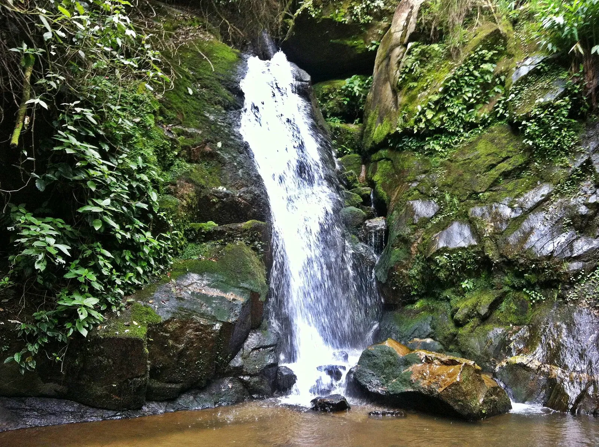
Queda de cerca de 15 metros com área de lazer e ambiente familiar.
Onde fica: Povoado de Boa Esperança, a uns 5 km do centro de Lumiar, por estrada asfaltada.
Como chegar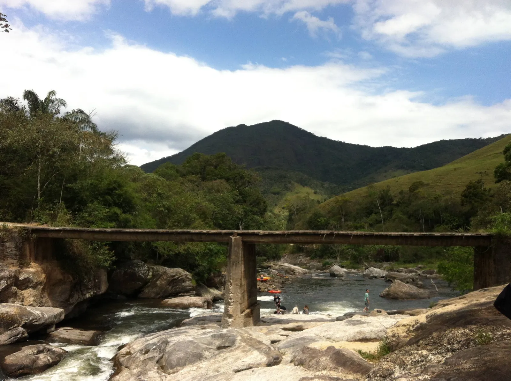
Ponto onde o Rio Bonito deságua no Rio Macaé. Tem trechos calmos para banho e corredeiras: é a saída do rafting e da canoagem.
Onde fica: A 6 km da praça central de Lumiar. É só seguir as placas.
Como chegar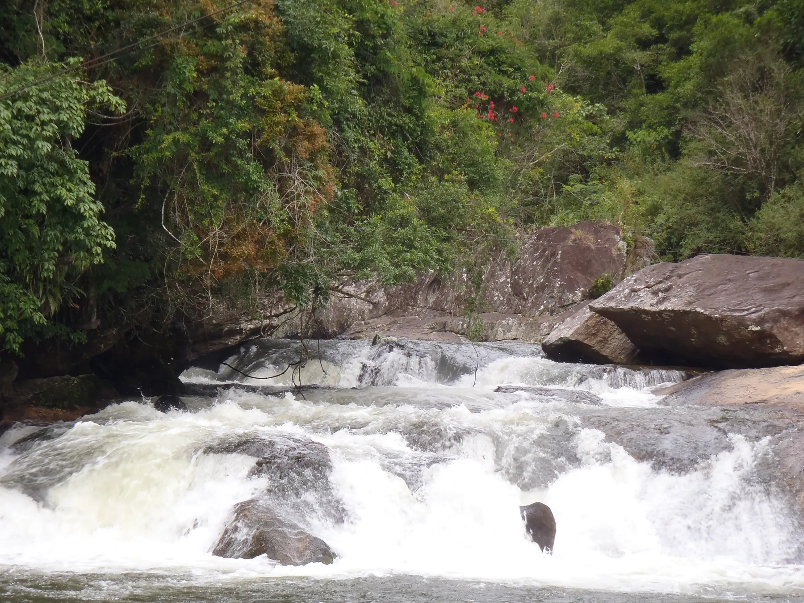
Apesar do nome, é a “praia de Lumiar”: faixa de areia e águas tranquilas, boa para famílias. Fica em área particular, com entrada paga.
Onde fica: Na entrada do distrito, no km 22 da estrada Mury–Lumiar, a cerca de 1 km do centro.
Como chegar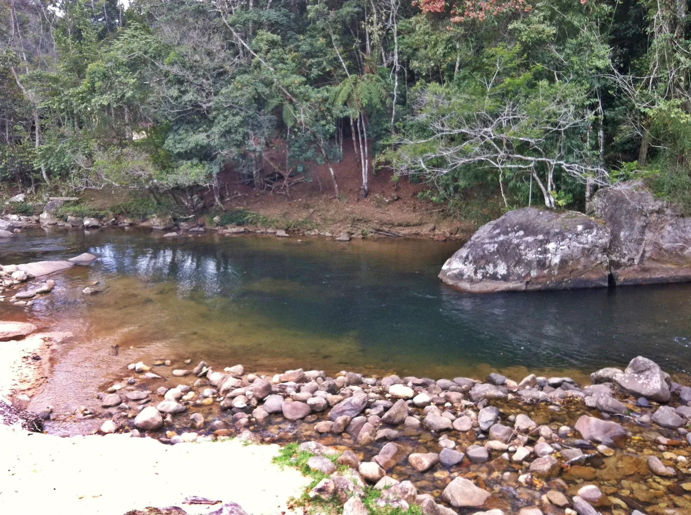
Complexo particular com piscinas naturais, área de camping e boia-cross.
Onde fica: A 10 km do centro de Lumiar, passando pelo Encontro dos Rios. O último trecho é de terra, com ladeira.
Como chegar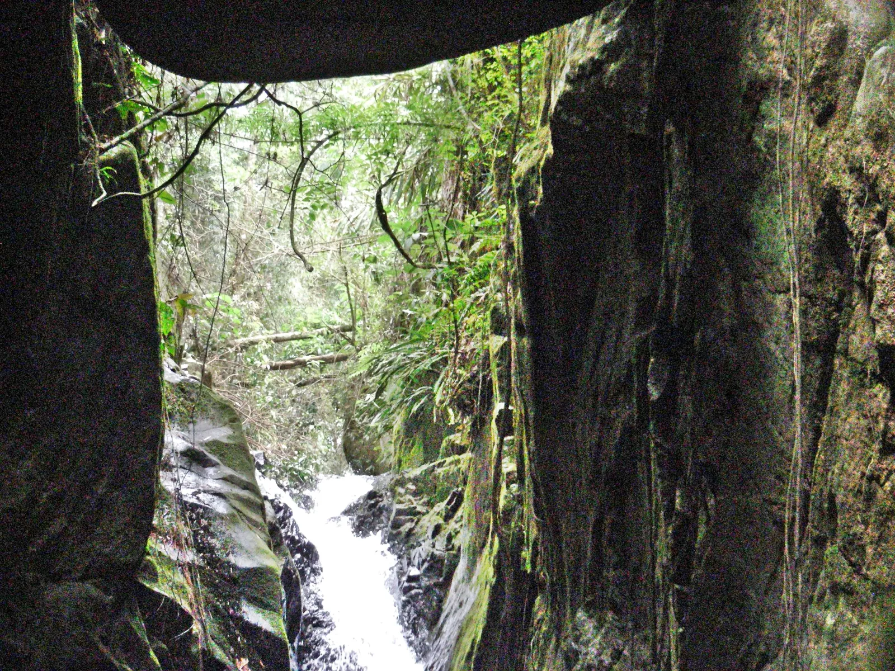
Queda escondida num cânion estreito, com pedras que formam um escorrega natural. O acesso é desafiador.
Onde fica: Boa Esperança, Lumiar.
Como chegar
Toque em uma parada para ver a foto, os detalhes e como chegar.
02Amparo de Turismo Rural
Porteiras abertas, queijos, cachaça e colheita de frutasAbrir circuitoFechar
Cada estrada leva a uma propriedade rural que abre a porteira ao visitante. Dá para provar queijos artesanais e cachaça, colher frutas e acompanhar o dia a dia da roça, recebido por quem vive e produz ali.
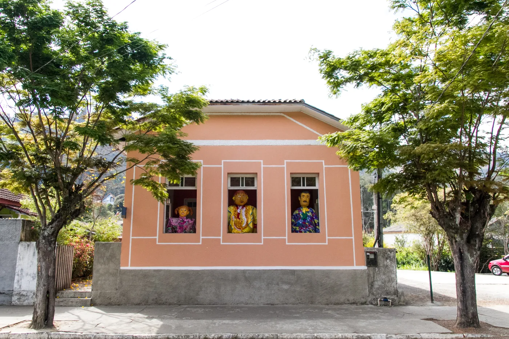
O centro da vila, ponto de partida para as propriedades do circuito.
Onde fica: Distrito de Amparo, acesso pela RJ-150.
Como chegarSítios que abrem a porteira para visitas: queijos artesanais, cachaça, colheita de frutas e a rotina do campo.
Onde fica: A lista das propriedades que recebem visitantes está no Centro de Atendimento ao Turista: (22) 2543-6307.
Como chegar
Toque em uma parada para ver a foto, os detalhes e como chegar.
03Terê-Fri
A estrada entre Teresópolis e Nova Friburgo, de queijo em queijoAbrir circuitoFechar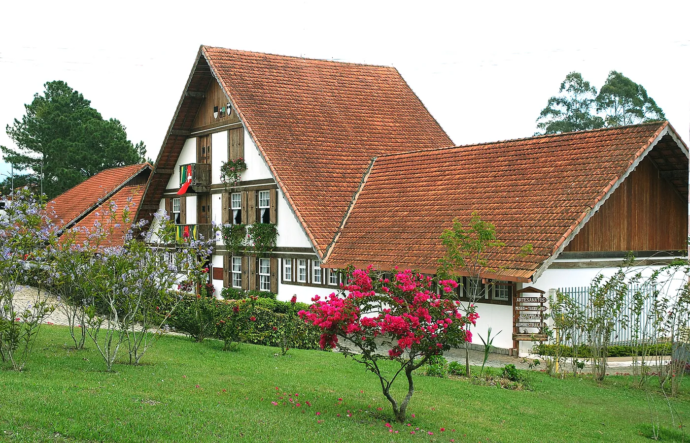
Pela RJ-130, vales profundos e picos acompanham a viagem. No caminho: queijos produzidos na região, vinícolas, cosméticos, restaurantes de pratos típicos e cafés para fechar o dia.
Reúne o Memorial da Colonização Suíça, o Museu de Taxidermia e o Galpão de Encanto e Arte. No mesmo lugar: jardim, uma pequena fábrica de chocolate e a Queijaria Escola, com queijos, doces, linguiças e geleias.
Onde fica: Na estrada Terê-Fri (RJ-130), a pouco mais de 20 km do Centro.
Como chegar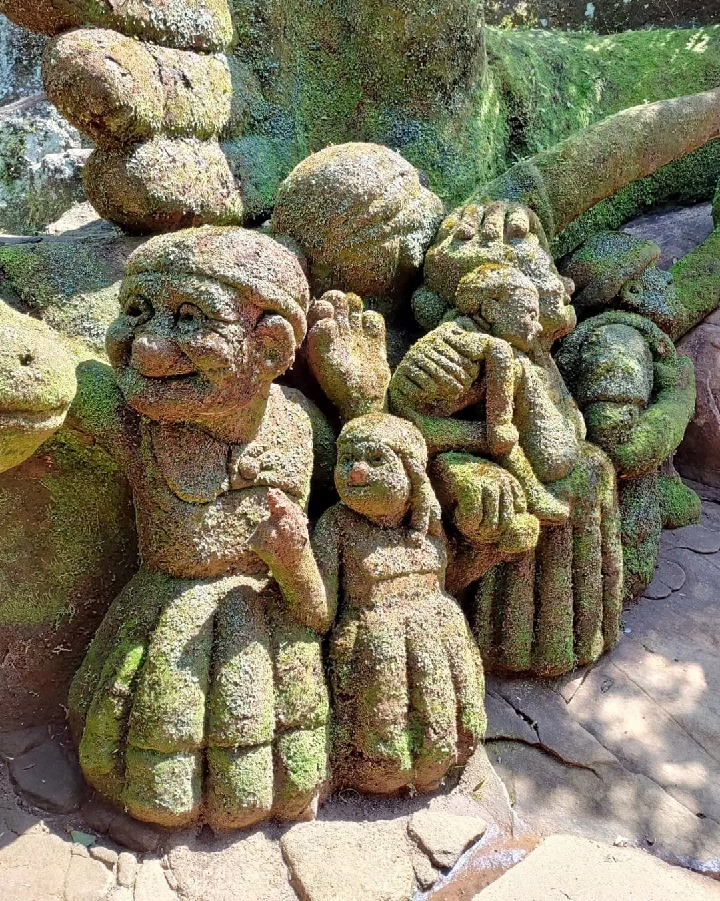
Ateliê ao ar livre onde o artista Geraldo Simplício, o Nêgo, cria e expõe suas esculturas gigantes de barro e musgo. No fim do passeio há um pequeno museu. A entrada é paga.
Onde fica: RJ-130, km 55, a cerca de 17 km do Centro.
Como chegarApiário com loja de produtos do mel e museu sobre as abelhas.
Onde fica: A cerca de 20 km do Centro, vizinho da Casa Suíça e do Jardim do Nêgo: dá para visitar os três no mesmo dia.
Como chegar
Toque em uma parada para ver a foto, os detalhes e como chegar.
04Três Picos
Trilhas, Mata Atlântica e a mesa farta da roçaAbrir circuitoFechar
Trilhas com vistas abertas para os Três Picos, no meio da Mata Atlântica. Depois da caminhada, frutas, verduras frescas, mel, pães e broa à venda pelo caminho, e pousadas aconchegantes para ficar.
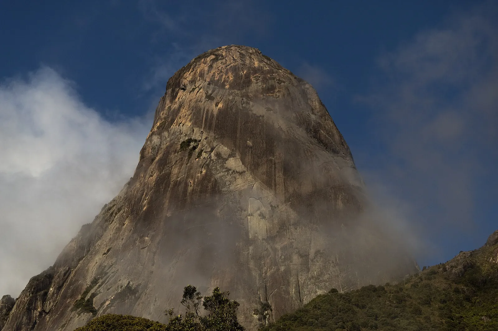
Trilhas no meio da Mata Atlântica, com vistas para os Três Picos. Trilhas de montanha pedem preparo: confira o tempo e as orientações do parque antes de sair.
Onde fica: Região de Campo do Coelho, em Nova Friburgo.
Como chegar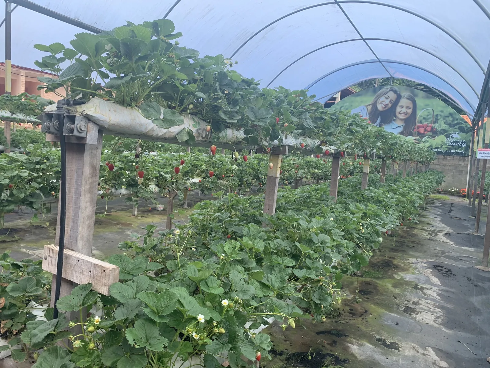
Na volta da trilha, frutas, verduras frescas, mel, pães e broa à venda pelo caminho, e pousadas para ficar.
Onde fica: Ao longo das estradas da região dos Três Picos.
Como chegar
Toque em uma parada para ver a foto, os detalhes e como chegar.
05Circuito das Flores
Campos, viveiros e estufas em Vargem AltaAbrir circuitoFechar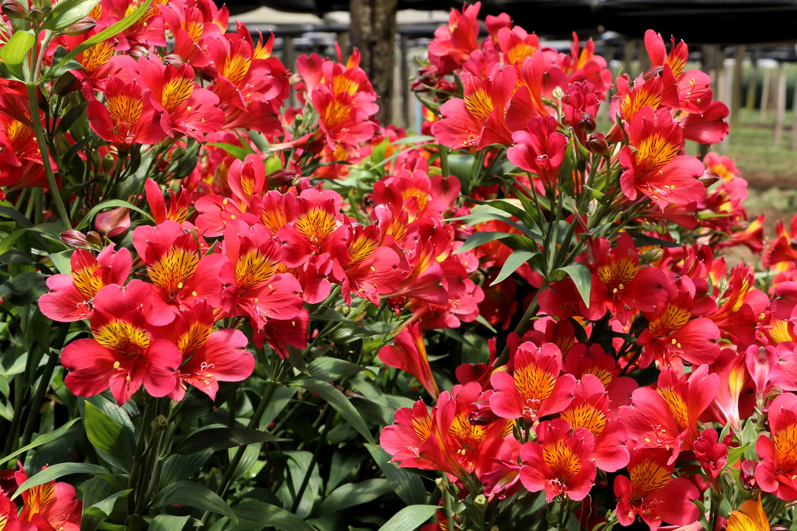
Vargem Alta vira um jardim de cores e perfumes. Entre campos floridos, viveiros e estufas, rosas e begônias dividem espaço com flores exóticas e tradicionais. Os produtores mostram como cultivam, e cada canto rende uma boa foto.
Campos de flores a perder de vista, com rosas, begônias, astromélias e flores exóticas.
Onde fica: Vargem Alta, Nova Friburgo.
Como chegar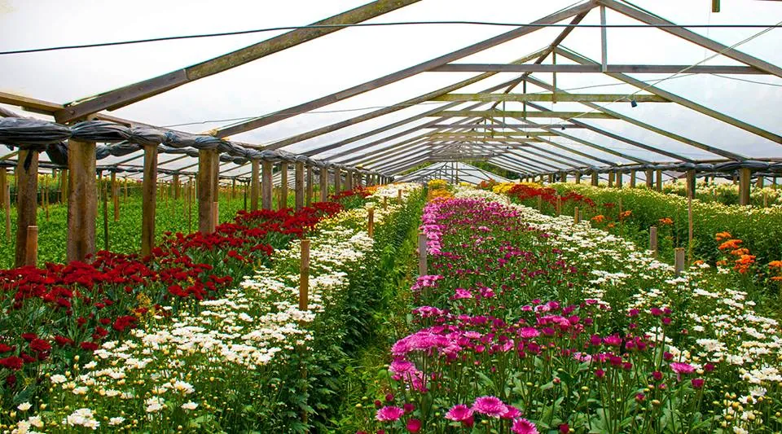
Os produtores mostram como cultivam as flores de corte. Bom lugar para fotografar.
Onde fica: Vargem Alta, Nova Friburgo.
Como chegar
Toque em uma parada para ver a foto, os detalhes e como chegar.
06Walking Tour
O Centro a pé: praças, prédios históricos e teleféricoAbrir circuitoFechar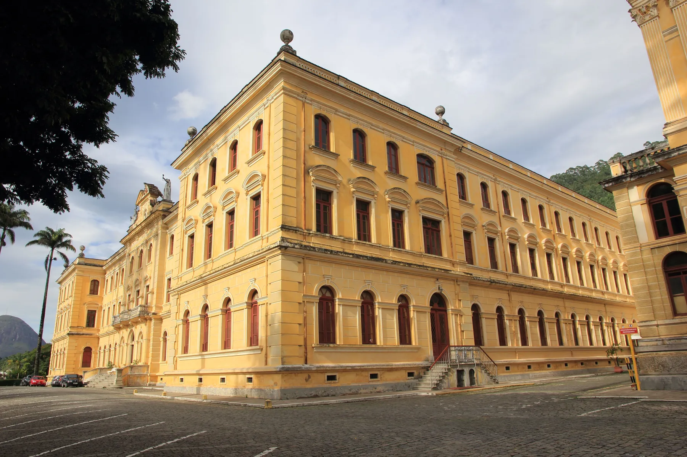
A pé pelo Centro: ruas de paralelepípedo, arquitetura que conta a história da cidade, comércio, praças arborizadas, feira de artesanato, espaços culturais e o teleférico.
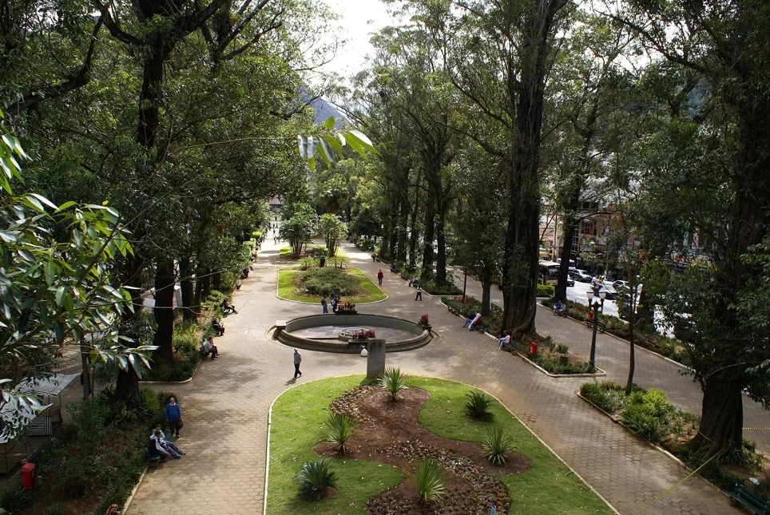
A grande praça arborizada do Centro, ponto de partida do passeio a pé.
Onde fica: Centro de Nova Friburgo.
Como chegar
Dedicada a São João Batista, que dá nome à vila desde a fundação.
Onde fica: Centro de Nova Friburgo.
Como chegarCasa da primeira comunidade luterana do Brasil, fundada pelos imigrantes alemães em 1824. Conheça a história na página História.
Onde fica: Centro de Nova Friburgo.
Como chegarPrédio histórico de escola jesuíta, um dos símbolos da cidade.
Onde fica: Centro de Nova Friburgo.
Como chegar
Praça com a igrejinha e a estação do teleférico, que sobe o morro para uma vista da cidade.
Onde fica: Centro de Nova Friburgo.
Como chegar
Toque em uma parada para ver a foto, os detalhes e como chegar.
07Tour Cervejeiro
Cervejarias artesanais, do lúpulo ao copoAbrir circuitoFechar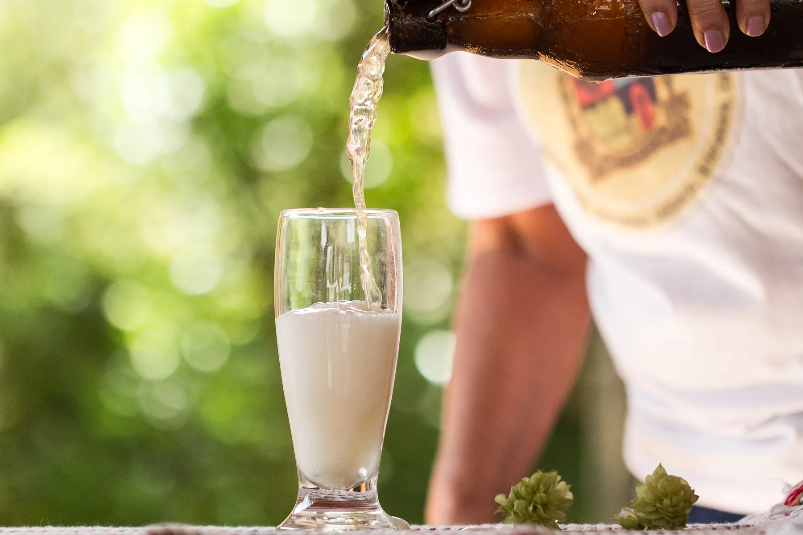
As cervejarias artesanais da cidade abrem a produção ao visitante: lúpulo e malte, tanques de fermentação e barris de carvalho, e a degustação de rótulos que vão dos mais leves aos mais encorpados.
Para saber quais cervejarias recebem visitas e em que horários, fale com o Centro de Atendimento ao Turista: (22) 2543-6307.
08Rota do Vinho
Vinícolas das montanhas, da colheita à taçaAbrir circuitoFechar
Nas vinícolas das montanhas, o visitante acompanha o caminho da uva: a colheita, a vinificação e o cuidado em cada etapa. No fim, a degustação de tintos e brancos produzidos na região.
Para saber quais vinícolas recebem visitas e em que horários, fale com o Centro de Atendimento ao Turista: (22) 2543-6307.
Natureza perto do Centro
Pedras, picos e cachoeiras que não fazem parte de um circuito, mas ficam a poucos minutos da cidade.

Pedra do Cão Sentado
Foto: João Luccas Oliveira
Pico da Caledônia
Foto: Fernando Lo Bianco
Cachoeira Feiticeira
Cascatinha · Foto: João Luccas Oliveira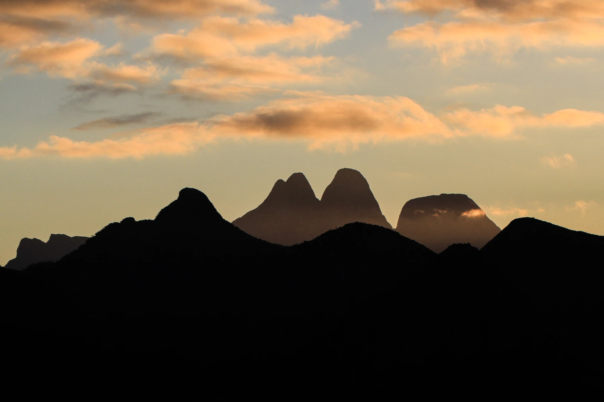
Pedra do Imperador
Foto: João Luccas OliveiraParque Municipal Juarez Frotté
Abrir no mapaCachoeira da Adutora
Abrir no mapa
Nova Friburgo Country Clube
Foto: Daniel MarcusAntes de sair
Informações importantes
Dados do Mapa Turístico oficial da Secretaria de Turismo. Instagram: @turismonovafriburgo e @novafriburgodestino.
Transporte coletivo turístico: o cadastro de acesso é obrigatório. Emita a senha em senhas.novafriburgo.rj.gov.br.
Distâncias
| Teresópolis/RJ | 76,6 km |
| Macaé/RJ | 122 km |
| Petrópolis/RJ | 133 km |
| Búzios · Cabo Frio/RJ | 139 km |
| Rodoviária do Rio | 142 km |
| Aeroporto Santos Dumont | 142 km |
| Aeroporto Internacional (GIG) | 147 km |
| Vitória/ES | 406 km |
| Belo Horizonte/MG | 441 km |
| São Paulo/SP | 445 km |
Telefones úteis
| Centro de Atendimento ao Turista | (22) 2543-6307 |
| Prefeitura de Nova Friburgo | (22) 2525-9100 |
| Nova Friburgo Convention Bureau | (22) 3261-2044 |
| Polícia Militar | (22) 2522-6681 |
| Polícia Civil | (22) 2533-1967 |
| Corpo de Bombeiros | (22) 2533-1574 |
| Hospital Raul Sertã | (22) 98864-0894 |